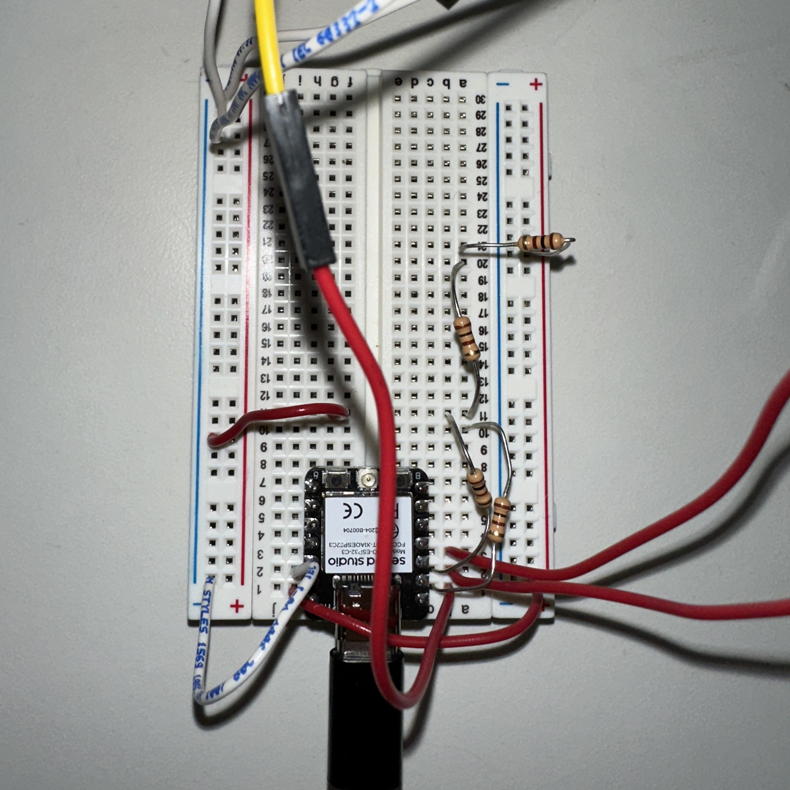
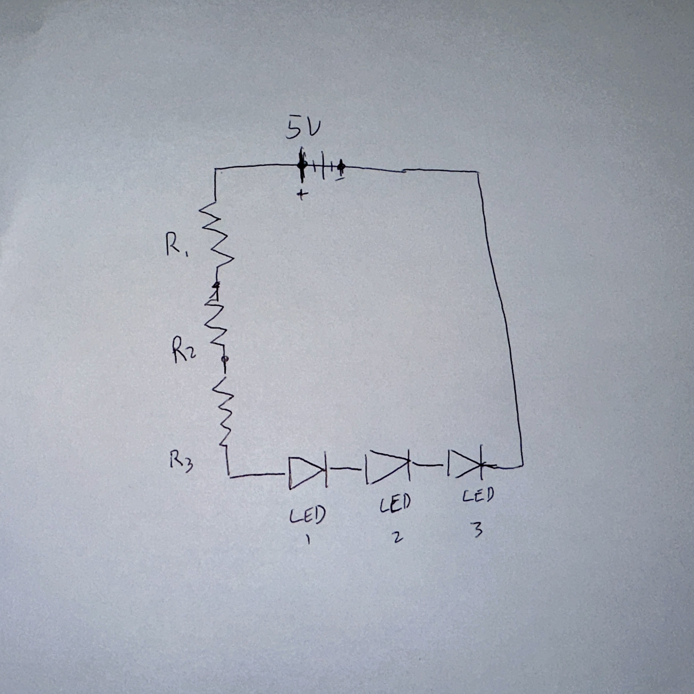

<div class="textcontainer">
<p class="margin"> </p>
<h3>Week 4: Microcontroller Programming</h3>
<p class="margin"> </p>
<p class="margin"> </p>
<h4>Do Something with an arduino</h4>
<p class="margin"> </p>
<p> For this week, I decided to expand upon my kinetic sculpture by adding blinking LEDs to it. This was meant to emulate the shimmering of stars, and represent
when you progress far enough into the google dino game to get to the "dark" mode. The process of this was fairly easy, with the main hiccup being the fact that
for some reason, none of the yellow LEDs in the lab seemed to work for me. At the end of the day, maybe this was a blessing in disguise because I think I prefer
the look of the blue lights.
</p>
<p class="margin"> </p>
<video width="640" height="640" controls>
<source src="DinoLightsVid.mp4" type="video/mp4">
</video>
<p class="margin"> </p>
<p> Here is how my circuit looked for the week. The largest difficulty here was chaining enough restors together to allow the LEDs to dim enough to
create that shimmering effect. I drew a schematic to go along with it.</p>
<p></p>
<p class="margin"> </p>
<p></p>
<P> And here is my code for the week!</P>
<pre>
#include <Arduino.h>
const int NUM_LEDS = 3;
int ledPin[NUM_LEDS] = { D0, D1, D2 };
int ledState[NUM_LEDS];
void setup() {
for (int i = 0; i < NUM_LEDS; i++) {
pinMode(ledPin[i], OUTPUT);
}
randomSeed(micros());
for (int i = 0; i < NUM_LEDS; i++) {
ledState[i] = random(20, 201);
}
}
void loop() {
for (int i = 0; i < NUM_LEDS; i++) {
analogWrite(ledPin[i], ledState[i]);
long randNumber = random(-40, 41);
ledState[i] += randNumber;
if (ledState[i] > 200) {
ledState[i] = 200;
}
if (ledState[i] < 10) {
ledState[i] = 10;
}
}
delay(100);
}</pre>
</div>